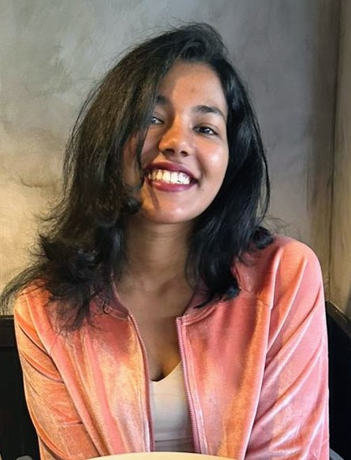

🦾
Robot Learning & Imitation Learning
Leveraging structure in expert demonstrations — pedagogical intent and per-example informativeness — for sample-efficient, OOD-robust manipulation policies.
Robot Learning · Imitation Learning · VLAs · Embodied AI
Researcher building robots that learn — from human demonstrations, interaction, and reward — toward general, sample-efficient robot autonomy.
M.S. in Electrical & Computer Engineering (Machine Learning & Data Science), University of Southern California. Aspiring PhD student in robot learning.

MDI am a researcher focused on robot learning — the intersection of imitation learning, reinforcement learning, and robotic manipulation. My work asks how robots can learn efficiently and reliably: by exploiting the structure in expert demonstrations, by dynamically composing policies at execution time, and by grounding language and perception in real-world action.
I am currently a Research Intern at the Georgia Tech Research Institute (GTRI), building vision-based pick-selection systems for deformable objects. At USC, I work in the LIRA Lab (Prof. Erdem Bıyık) on TV-BC, a teaching-volume–weighted imitation learning method, and in the GLAMOR Lab (Prof. Jesse Thomason) on SWAP, a stepwise policy-routing framework for vision-language-action models deployed on the Franka Panda arm.
I am applying to PhD programs to deepen this research on general, sample-efficient, and human-aligned robot autonomy.
Leveraging structure in expert demonstrations — pedagogical intent and per-example informativeness — for sample-efficient, OOD-robust manipulation policies.
Dynamically composing multiple VLA and control policies during execution via offline RL, with evaluation pipelines spanning tabletop and real-world manipulation.
Dialogue-driven, RAG-augmented, and language-conditioned policies for embodied decision-making, scene understanding, and vision-language navigation.
Scalable perception pipelines spanning instance segmentation, conditioned image synthesis, and vision-language grounding for contact-rich robot tasks.
Reliability of VLM/VLA backbones via hidden-state probing, lightweight evaluators, and behavior-grounded benchmarks.
Intelligent Robotics & Autonomous Systems · PI: Colin Usher · Atlanta, GA
Learning & Interactive Robot Autonomy Lab · PI: Prof. Erdem Bıyık · USC
Grounding Language in Actions, Multimodal Observations & Robots · PI: Prof. Jesse Thomason · USC
Imitation Learning from Deliberative Teachers
In preparation. Target: ICLR 2026.
SWAP: Stepwise Action Policy Routing for Vision-Language-Action Models
Submitted to CoRL 2026.
DiPS: Dialogue Policy Selection for High-Stakes Persuasion Agents
SIGDIAL 2026 — ACL/ISCA Special Interest Group on Discourse and Dialogue.
View paper →Hand Gesture Recognition using DenseNet201–Mediapipe Hybrid Modelling
2022 International Conference on Automation, Computing and Renewable Systems (ICACRS), IEEE, 2022.
View paper →* denotes equal contribution.
Hidden-state probes on VLM representations approximating hallucination metrics (factuality, consistency, modality alignment), replacing heavy external evaluators with lightweight linear probes; benchmarked on MHaluBench with dashboards for cross-modal error analysis across VLM checkpoints.
Mar 2025 – May 2025Robotic-hand interface combining ASR (speech-to-text) for voice control with Mediapipe landmark tracking for real-time gesture replication; encoded finger-joint angles to servo commands via microcontroller, achieving sub-100 ms end-to-end latency.
Project link → Jan 2023 – Mar 2023Coordinated a swarm of mobile bots tracked via ArUco markers and an overhead camera, with A* path planning and WiFi-relayed routing commands to onboard microcontrollers.
M.S. in Electrical & Computer Engineering — Machine Learning & Data Science
Relevant coursework: Robot Learning (CSCI 699), Robot Mobility (EE 579), Deep Learning (EE 541), Linear Algebra for Engineering (EE 510), Probability for Electrical & Computer Engineers (EE 503).
I'm always happy to discuss robot learning, research collaborations, and PhD opportunities.